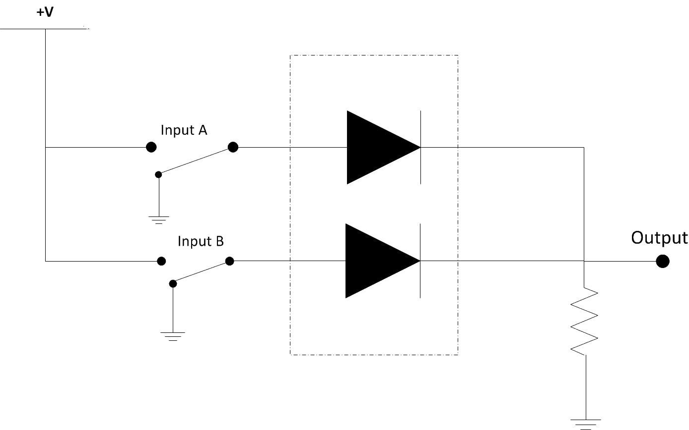

Hybrid Analog and Digital Electronics Lab
Question 1. One of the statements of De Morgan’s theorem states that :-
(AB)’ = A’ + B’ (A + B) = A’.B’ A’ + B’ = A’B’ (AB)’ = A’ + B
Question 2. “AND” and “OR” operations are interchangeable through negations
Sometimes Always Never Not Sure
Question 3. The circuit diagram shown below represents
Negative AND logic Positive AND logic Negative NAND logic Positive NAND logic
Question 4. If individual negations are applied on two AND statements then its same statement is
NOR OR statement NOT OR statement NAND AND statement NOT AND statement
Question 5. Identify the logic gate that can be drawn from below diagram
AND gate NAND gate NOT gate NOR gate
Question 6. If individual negations are applied on two OR statements then its same statement is
Question 7. Identify the logic function described by given diagram 
OR gate AND gate XOR gate NAND gate
Question 8. As per De Morgan’s Law, (AUB)’ is equal to
A’ ∩ B’ A’ ꓴ B’ (A∩B)’ A’+B’
Question 9. Identify the type of gate represented by phrase “Any low input guarantees high output”
OR gate AND gate NOR gate NAND gate
Qyestion 10. As per De Morgan’s Law, (A∩B)’ is equal to
Number of score out of 10 = Score in percentage =